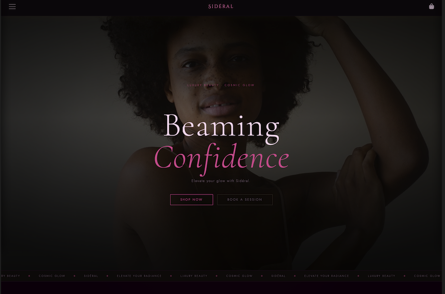
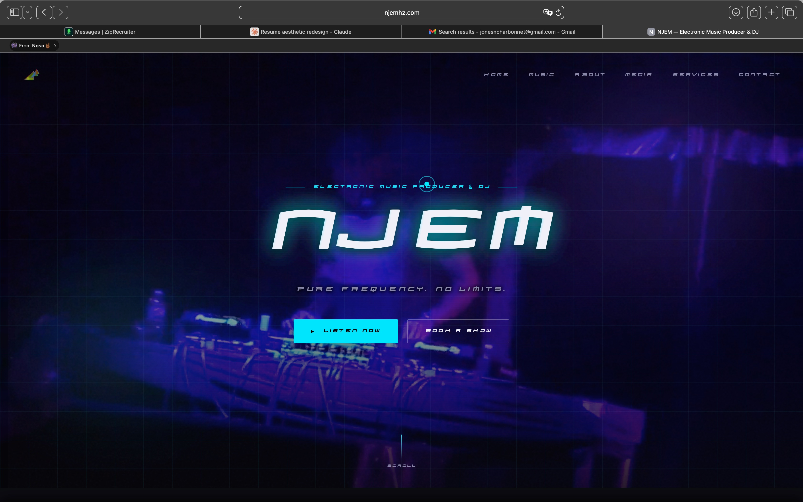
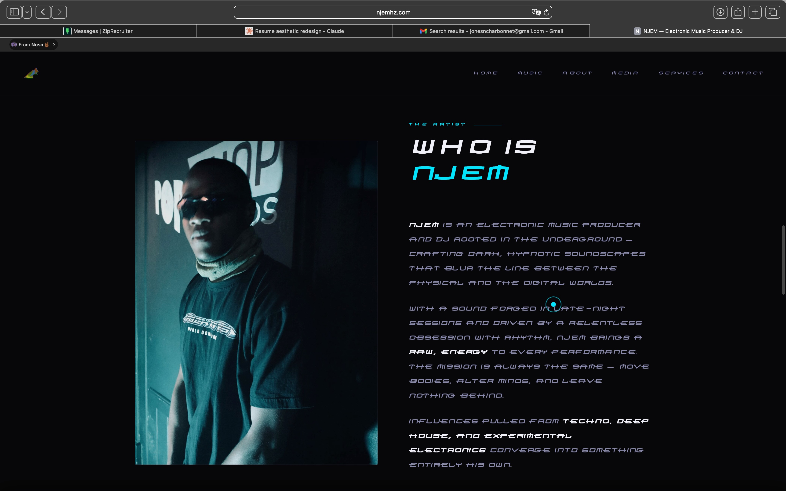

Designer · Engineer · Creator
I design and build user-centered digital experiences — from concept and research through to shipped product. Focused on clean interfaces, intuitive interactions, and the craft of making things feel right.

Brand Website · Live
A luxury beauty brand site built from the ground up — cosmic visual identity, full storefront, shopping cart, and booking system. Vanilla HTML, CSS, and JavaScript.

Client Website · Live
One-scroll artist website for electronic music producer & DJ NJEM — custom audio player, video hero, booking form, and full EPK. Built in 5 weeks from research to launch.
AI Application · In Development
An AI-powered app that surfaces personalized listings — moving beyond rigid filters to understand what a traveler actually wants through natural language.
Work
Brand Website · Live
A luxury beauty brand site built from the ground up. Cosmic visual identity — berry, rose, and cream against deep charcoal — with a fully functional storefront, shopping cart, and booking system.
Client Website · Live
One-scroll artist website for electronic music producer and DJ NJEM. Custom audio player, fullscreen video hero, glitch title animation, booking form, and complete digital EPK. Research through launch in 5 weeks.
AI Application · In Development
An AI-powered application that analyzes Airbnb listing data to surface personalized recommendations — moving beyond basic filters to understand what a traveler actually wants.
Case Study · Brand Website · Live
A luxury beauty brand designed and built from scratch — where deep charcoal skies meet soft celestial warmth. Berry, rose, and cream come together to create something that feels like getting ready under a sky full of stars.
01 — The Problem
Most luxury beauty websites make the same two mistakes — they go so minimal they feel sterile, or they lean so hard into glamour they feel dated. Neither creates the sense of intimacy that makes a person feel like a brand was made specifically for them.
The brief for Sidéral was to occupy a different space entirely. Premium, yes — but also warm. Otherworldly without being distant. A site that felt less like a storefront and more like stepping into a ritual.
How do you make a beauty brand feel like a private, celestial world — and still convert?
02 — Design Approach
The name Sidéral means "of the stars," but the interpretation was never cold or sci-fi. The design language draws from the warmest parts of the night sky — the rose blush of a nebula, the deep berry of a galaxy's core, the cream-soft glow of light through atmosphere.
Typography reinforces the mood: Cormorant Garamond at 300 weight across headlines, Jost at 200 for body copy — airy, almost whispering. Together they give the brand a quality that feels both ancient and modern.
03 — What I Built
Sidéral isn't a landing page with an aesthetic — it's a complete, working brand site. A product storefront, shopping cart with live state management, appointment booking flow, and responsive navigation. All built in vanilla HTML, CSS, and JavaScript — no frameworks, no libraries.
Feature
Product Storefront
Feature
Shopping Cart
Feature
Booking System
Feature
Responsive Design
04 — Outcome & Reflection
Building Sidéral taught me something I apply to every project now: color temperature is emotional temperature. Swap a cold black for a charcoal with magenta undertones and the entire feeling of a page shifts — users lean in rather than pull back.
The palette, the gradient that drifts from cream to deep berry, the whisper-weight of Cormorant at 300 — none of it is accidental. It's all in service of one feeling: that this brand was made for you.
Case Study · Client Website · Live
A one-scroll artist website for electronic music producer and DJ NJEM — built to land bookings, showcase original productions, and serve as a complete digital EPK for promoters and venue owners.
01 — The Brief
NJEM is an electronic music producer and DJ rooted in the underground — crafting dark, hypnotic soundscapes across techno, deep house, and experimental electronics. His first full EP, Proposed Utopia, had just dropped. But all bookings were still happening through Instagram DMs.
The brief required three things simultaneously: a professional booking portal, a place to showcase original productions inline, and a digital EPK that promoters could link to when pitching NJEM to venues.
A promoter should be able to land on the site, hear the sound, understand the artist, and send a booking inquiry — without leaving the page or opening a second tab.
02 — User Research
Research ran across a direct client interview, user surveys with fans and potential bookers in the electronic music space, and a competitor audit of established DJ and producer sites — Chris Lake, John Summit, and Peggy Gou.
| Finding | Design response |
|---|---|
| 75%+ browse on mobile | Mobile-first layout, tested on 375px screens throughout |
| "Hear the music" ranked #1 | Custom inline audio player — no redirect to external platform |
| 64% leave if booking is buried | "Book a Show" CTA in the hero, visible before any scrolling |
| Competitors buried booking 3+ clicks deep | Contact section reachable via sticky nav and CTA at scroll end |
03 — Ideation
The single-page scroll structure was locked in early — every extra page was a potential drop-off. The six sections were sequenced as a narrative: hero establishes the artist, music proves it, about gives context, media adds visual evidence, services lays out what NJEM offers, and contact closes the loop.
01
Hero
02
Music
03
About
04
Media
05
Services
06
Contact
04 — Design System
The visual language was built to mirror the environments NJEM performs in. Near-black backgrounds, a single electric cyan accent, with purple and pink appearing sparingly. The custom Homoarak typeface — loaded via @font-face, unavailable anywhere else — makes the brand immediately distinct from any template.
05 — Technical Build
Hi-fi prototypes in Figma translated the structure into the full visual language before code. The build introduced several technically ambitious features — each a direct response to a user research requirement.
| Feature | What it does |
|---|---|
| Fullscreen video hero | DJ performance footage as viewport background — overlaid with animated grid, scanlines, film grain, and ambient orbs |
| CSS glitch title animation | Pseudo-elements with clip-path keyframes produce periodic cyan/purple misalignment on the NJEM title. No library. |
| Custom inline audio player | Vanilla JS player bar fixed to viewport bottom — prev/next, scrub, volume, track metadata, auto-advance. No Spotify redirect. |
| Custom two-part cursor | Cyan dot + delayed ring, both positioned via CSS transform (not top/left) to avoid paint jank |
| IntersectionObserver scroll reveal | Staggered 80ms fade-in per element — no scroll event listeners, no layout thrash |
| Async contact form | Formspree API, no page reload — button transitions through sending/success/error states with color feedback |
06 — Featured Release
The music section leads with Proposed Utopia — NJEM's 2025 EP, available inline across SoundCloud, YouTube, Bandcamp, and Apple Music. Six tracks playable without leaving the page.

07 — Outcome & Reflection
The NJEM site launched at njemhz.com in early June 2025. It's the first professional online presence the artist has had — a single destination that communicates who he is, what he sounds like, what he offers, and how to book him.
The most valuable lesson: building for a real client with a real voice makes every design decision more grounded. The dark visual language, the Homoarak font, the video hero — none of it came from a style reference. It came from understanding NJEM's world well enough to represent it on screen.
Case Study · AI Application · In Development
An AI-powered application that analyzes Airbnb listing data to surface personalized recommendations — moving beyond basic filters to understand what a traveler actually wants.
01 — The Problem
Airbnb's search filters are broad. But the things that actually make a stay great are harder to filter for: neighborhood vibe, host responsiveness, whether it's quiet at night. Travelers spend hours reading reviews trying to piece together what an algorithm should surface automatically.
What if you could describe what you want in plain language and get listings that actually match — not just listings that fit the filters?
02 — Current Progress
Done
Problem Definition
Done
Data Research
In Progress
AI Pipeline
Upcoming
UI Build
About
Designer · Engineer · Creator
Bio
I'm a UX/UI designer and developer with a background in both graphic design and software engineering — which means I can take a product from early wireframes through to a shipped, working build. I care deeply about the details that make interfaces feel intuitive, and I've mentored teams through that process as much as I've built individually.
My work sits at the intersection of design systems thinking and technical execution. I'm most at home in cross-functional environments where design and engineering have to speak the same language — and I've spent a lot of time making sure I speak both fluently.
Skills & Tools
Contact
Send a message
Source
Repository
Sozark
github.com/Sozark
Source Code
Browse source code, projects, and experiments. All public work lives in the archive — from client builds to game jam entries and experiments.
Open GitHub